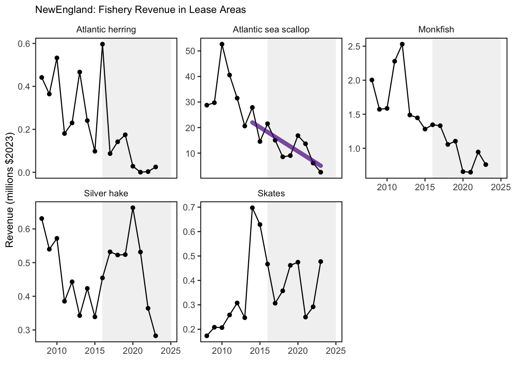
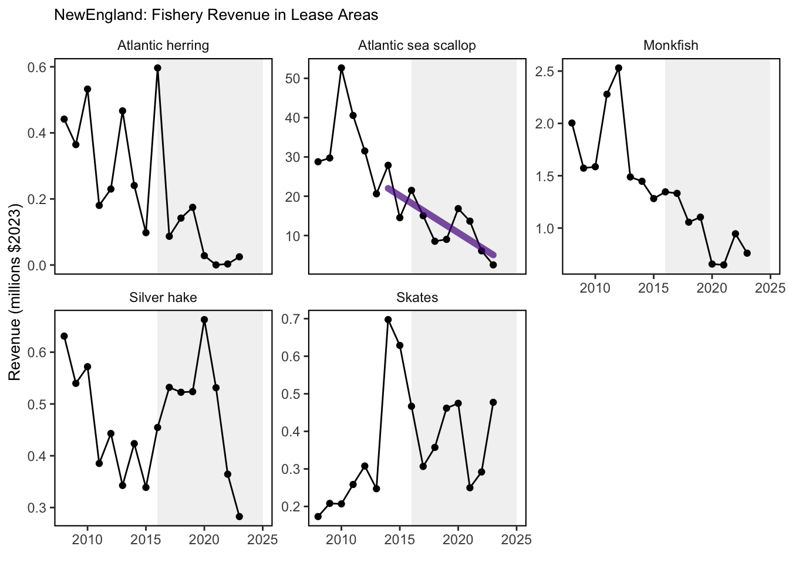

SMART Indicator Report: Fishery Impacts from Offshore Wind Development
1 Descriptive Section
1.2 Indicator name
Fishery Impacts from Offshore Wind Development
Includes variable(s): American Plaice-sum_landing, American Plaice-sum_value, Atlantic cod-sum_landing, Atlantic cod-sum_value, Atlantic halibut-sum_landing, Atlantic halibut-sum_value, Atlantic herring-sum_landing, Atlantic herring-sum_value, Atlantic Mackerel-sum_landing, Atlantic Mackerel-sum_value, Atlantic Sea Scallop-sum_landing, Atlantic Sea Scallop-sum_value, Black Sea Bass-sum_landing, Black Sea Bass-sum_value, Bluefish-sum_landing, Bluefish-sum_value, Blueline Tilefish-sum_landing, Blueline Tilefish-sum_value, Butterfish-sum_landing, Butterfish-sum_value, Chub Mackerel-sum_landing, Chub Mackerel-sum_value, Golden Tilefish-sum_landing, Golden Tilefish-sum_value, Haddock-sum_landing, Haddock-sum_value, Illex Squid-sum_landing, Illex Squid-sum_value, Longfin Squid-sum_landing, Longfin Squid-sum_value, Monkfish-sum_landing, Monkfish-sum_value, Ocean Quahog-sum_landing, Ocean Quahog-sum_value, Offshore Hake-sum_landing, Offshore Hake-sum_value, Pollock-sum_landing, Pollock-sum_value, Red Crab-sum_landing, Red Crab-sum_value, Red Hake-sum_landing, Red Hake-sum_value, Redfish-sum_landing, Redfish-sum_value, Scup-sum_landing, Scup-sum_value, Silver Hake-sum_landing, Silver Hake-sum_value, Skates-sum_landing, Skates-sum_value, Spiny Dogfish-sum_landing, Spiny Dogfish-sum_value, Summer Flounder-sum_landing, Summer Flounder-sum_value, Surfclam-sum_landing, Surfclam-sum_value, White Hake-sum_landing, White Hake-sum_value, Windowpane flounder-sum_landing, Windowpane flounder-sum_value, Winter flounder-sum_landing, Winter flounder-sum_value, Witch flounder-sum_landing, Witch flounder-sum_value, Yellowtail flounder-sum_landing, Yellowtail flounder-sum_value
1.3 Indicator brief description
The data presented here include landings and revenue of species managed by the New England and Mid-Atlantic Fishery Management Councils within existing offshore wind lease areas.
1.4 Indicator visualization
Figures include annual landings and revenue for each managed species caught within existing offshore wind lease areas. Tables include average annual landings and revenue for the top ten species caught within existing and proposed offshore wind lease areas and the maximum proportion of total annual regional landings and revenues for all managed species.
 

2 SMART Attribute Section
2.1 Indicator documentation
2.1.1 Are indicators available for others to use (data downloadable)?
Yes
2.1.1.1 Where can indicators be found?
Data: https://noaa-edab.github.io/ecodata/index.html
Description: https://noaa-edab.github.io/catalog/wind_revenue.html
Technical documentation: https://noaa-edab.github.io/tech-doc/wind_revenue.html
2.1.1.2 How often are they updated? Are future updates likely?
[need sequential look at datasets for update frequency. Future requires judgement]
2.1.1.3 Who is the contact?
Douglas Christel (douglas.christel@noaa.gov)
2.1.2 Gather indicator statistics
2.1.2.1 Units
Indicator | Units |
|---|---|
American Plaice-sum_landing | no Units field |
American Plaice-sum_value | no Units field |
Atlantic cod-sum_landing | no Units field |
Atlantic cod-sum_value | no Units field |
Atlantic halibut-sum_landing | no Units field |
Atlantic halibut-sum_value | no Units field |
Atlantic herring-sum_landing | no Units field |
Atlantic herring-sum_value | no Units field |
Atlantic Mackerel-sum_landing | no Units field |
Atlantic Mackerel-sum_value | no Units field |
Atlantic Sea Scallop-sum_landing | no Units field |
Atlantic Sea Scallop-sum_value | no Units field |
Black Sea Bass-sum_landing | no Units field |
Black Sea Bass-sum_value | no Units field |
Bluefish-sum_landing | no Units field |
Bluefish-sum_value | no Units field |
Blueline Tilefish-sum_landing | no Units field |
Blueline Tilefish-sum_value | no Units field |
Butterfish-sum_landing | no Units field |
Butterfish-sum_value | no Units field |
Chub Mackerel-sum_landing | no Units field |
Chub Mackerel-sum_value | no Units field |
Golden Tilefish-sum_landing | no Units field |
Golden Tilefish-sum_value | no Units field |
Haddock-sum_landing | no Units field |
Haddock-sum_value | no Units field |
Illex Squid-sum_landing | no Units field |
Illex Squid-sum_value | no Units field |
Longfin Squid-sum_landing | no Units field |
Longfin Squid-sum_value | no Units field |
Monkfish-sum_landing | no Units field |
Monkfish-sum_value | no Units field |
Ocean Quahog-sum_landing | no Units field |
Ocean Quahog-sum_value | no Units field |
Offshore Hake-sum_landing | no Units field |
Offshore Hake-sum_value | no Units field |
Pollock-sum_landing | no Units field |
Pollock-sum_value | no Units field |
Red Crab-sum_landing | no Units field |
Red Crab-sum_value | no Units field |
Red Hake-sum_landing | no Units field |
Red Hake-sum_value | no Units field |
Redfish-sum_landing | no Units field |
Redfish-sum_value | no Units field |
Scup-sum_landing | no Units field |
Scup-sum_value | no Units field |
Silver Hake-sum_landing | no Units field |
Silver Hake-sum_value | no Units field |
Skates-sum_landing | no Units field |
Skates-sum_value | no Units field |
Spiny Dogfish-sum_landing | no Units field |
Spiny Dogfish-sum_value | no Units field |
Summer Flounder-sum_landing | no Units field |
Summer Flounder-sum_value | no Units field |
Surfclam-sum_landing | no Units field |
Surfclam-sum_value | no Units field |
White Hake-sum_landing | no Units field |
White Hake-sum_value | no Units field |
Windowpane flounder-sum_landing | no Units field |
Windowpane flounder-sum_value | no Units field |
Winter flounder-sum_landing | no Units field |
Winter flounder-sum_value | no Units field |
Witch flounder-sum_landing | no Units field |
Witch flounder-sum_value | no Units field |
Yellowtail flounder-sum_landing | no Units field |
Yellowtail flounder-sum_value | no Units field |
2.1.2.2 Length of time series, start and end date, periodicity
General overview: Annual from 2008-2023
Indicator specifics:
Indicator | EPU | StartYear | EndYear | NumYears | MissingYears |
|---|---|---|---|---|---|
American Plaice-sum_landing | NE | 2008 | 2023 | 16 | 0 |
American Plaice-sum_value | NE | 2008 | 2023 | 16 | 0 |
Atlantic cod-sum_landing | NE | 2008 | 2023 | 16 | 0 |
Atlantic cod-sum_value | NE | 2008 | 2023 | 16 | 0 |
Atlantic halibut-sum_landing | NE | 2008 | 2023 | 16 | 0 |
Atlantic halibut-sum_value | NE | 2008 | 2023 | 16 | 0 |
Atlantic herring-sum_landing | NE | 2008 | 2023 | 16 | 0 |
Atlantic herring-sum_value | NE | 2008 | 2023 | 16 | 0 |
Atlantic Mackerel-sum_landing | MAB | 2008 | 2023 | 16 | 0 |
Atlantic Mackerel-sum_value | MAB | 2008 | 2023 | 16 | 0 |
Atlantic Sea Scallop-sum_landing | NE | 2008 | 2023 | 16 | 0 |
Atlantic Sea Scallop-sum_value | NE | 2008 | 2023 | 16 | 0 |
Black Sea Bass-sum_landing | MAB | 2008 | 2023 | 16 | 0 |
Black Sea Bass-sum_value | MAB | 2008 | 2023 | 16 | 0 |
Bluefish-sum_landing | MAB | 2008 | 2023 | 16 | 0 |
Bluefish-sum_value | MAB | 2008 | 2023 | 16 | 0 |
Blueline Tilefish-sum_landing | MAB | 2008 | 2023 | 16 | 0 |
Blueline Tilefish-sum_value | MAB | 2008 | 2023 | 16 | 0 |
Butterfish-sum_landing | MAB | 2008 | 2023 | 16 | 0 |
Butterfish-sum_value | MAB | 2008 | 2023 | 16 | 0 |
Chub Mackerel-sum_landing | MAB | 2010 | 2023 | 13 | 1 |
Chub Mackerel-sum_value | MAB | 2010 | 2023 | 13 | 1 |
Golden Tilefish-sum_landing | MAB | 2008 | 2023 | 16 | 0 |
Golden Tilefish-sum_value | MAB | 2008 | 2023 | 16 | 0 |
Haddock-sum_landing | NE | 2008 | 2023 | 16 | 0 |
Haddock-sum_value | NE | 2008 | 2023 | 16 | 0 |
Illex Squid-sum_landing | MAB | 2008 | 2023 | 16 | 0 |
Illex Squid-sum_value | MAB | 2008 | 2023 | 16 | 0 |
Longfin Squid-sum_landing | MAB | 2008 | 2023 | 16 | 0 |
Longfin Squid-sum_value | MAB | 2008 | 2023 | 16 | 0 |
Monkfish-sum_landing | MAB | 2008 | 2023 | 16 | 0 |
Monkfish-sum_landing | NE | 2008 | 2023 | 16 | 0 |
Monkfish-sum_value | MAB | 2008 | 2023 | 16 | 0 |
Monkfish-sum_value | NE | 2008 | 2023 | 16 | 0 |
Ocean Quahog-sum_landing | MAB | 2008 | 2023 | 6 | 10 |
Ocean Quahog-sum_value | MAB | 2008 | 2023 | 6 | 10 |
Offshore Hake-sum_landing | NE | 2008 | 2023 | 14 | 2 |
Offshore Hake-sum_value | NE | 2008 | 2023 | 14 | 2 |
Pollock-sum_landing | NE | 2008 | 2023 | 16 | 0 |
Pollock-sum_value | NE | 2008 | 2023 | 16 | 0 |
Red Crab-sum_landing | NE | 2008 | 2023 | 5 | 11 |
Red Crab-sum_value | NE | 2008 | 2023 | 5 | 11 |
Red Hake-sum_landing | NE | 2008 | 2023 | 16 | 0 |
Red Hake-sum_value | NE | 2008 | 2023 | 16 | 0 |
Redfish-sum_landing | NE | 2008 | 2023 | 16 | 0 |
Redfish-sum_value | NE | 2008 | 2023 | 16 | 0 |
Scup-sum_landing | MAB | 2008 | 2023 | 16 | 0 |
Scup-sum_value | MAB | 2008 | 2023 | 16 | 0 |
Silver Hake-sum_landing | NE | 2008 | 2023 | 16 | 0 |
Silver Hake-sum_value | NE | 2008 | 2023 | 16 | 0 |
Skates-sum_landing | NE | 2008 | 2023 | 16 | 0 |
Skates-sum_value | NE | 2008 | 2023 | 16 | 0 |
Spiny Dogfish-sum_landing | MAB | 2008 | 2023 | 16 | 0 |
Spiny Dogfish-sum_landing | NE | 2008 | 2023 | 16 | 0 |
Spiny Dogfish-sum_value | MAB | 2008 | 2023 | 16 | 0 |
Spiny Dogfish-sum_value | NE | 2008 | 2023 | 16 | 0 |
Summer Flounder-sum_landing | MAB | 2008 | 2023 | 16 | 0 |
Summer Flounder-sum_value | MAB | 2008 | 2023 | 16 | 0 |
Surfclam-sum_landing | MAB | 2008 | 2023 | 16 | 0 |
Surfclam-sum_value | MAB | 2008 | 2023 | 16 | 0 |
White Hake-sum_landing | NE | 2008 | 2023 | 16 | 0 |
White Hake-sum_value | NE | 2008 | 2023 | 16 | 0 |
Windowpane flounder-sum_landing | NE | 2008 | 2013 | 6 | 0 |
Windowpane flounder-sum_value | NE | 2008 | 2013 | 6 | 0 |
Winter flounder-sum_landing | NE | 2008 | 2023 | 16 | 0 |
Winter flounder-sum_value | NE | 2008 | 2023 | 16 | 0 |
Witch flounder-sum_landing | NE | 2008 | 2023 | 16 | 0 |
Witch flounder-sum_value | NE | 2008 | 2023 | 16 | 0 |
Yellowtail flounder-sum_landing | NE | 2008 | 2023 | 16 | 0 |
Yellowtail flounder-sum_value | NE | 2008 | 2023 | 16 | 0 |
2.1.2.3 Spatial location, scale and extent
General overview: Offshore wind lease areas throughout the Exclusive Economic Zone from Maine through North Carolina
Indicator specifics:
Indicator | EPU |
|---|---|
American Plaice-sum_landing | NE |
American Plaice-sum_value | NE |
Atlantic cod-sum_landing | NE |
Atlantic cod-sum_value | NE |
Atlantic halibut-sum_landing | NE |
Atlantic halibut-sum_value | NE |
Atlantic herring-sum_landing | NE |
Atlantic herring-sum_value | NE |
Atlantic Mackerel-sum_landing | MAB |
Atlantic Mackerel-sum_value | MAB |
Atlantic Sea Scallop-sum_landing | NE |
Atlantic Sea Scallop-sum_value | NE |
Black Sea Bass-sum_landing | MAB |
Black Sea Bass-sum_value | MAB |
Bluefish-sum_landing | MAB |
Bluefish-sum_value | MAB |
Blueline Tilefish-sum_landing | MAB |
Blueline Tilefish-sum_value | MAB |
Butterfish-sum_landing | MAB |
Butterfish-sum_value | MAB |
Chub Mackerel-sum_landing | MAB |
Chub Mackerel-sum_value | MAB |
Golden Tilefish-sum_landing | MAB |
Golden Tilefish-sum_value | MAB |
Haddock-sum_landing | NE |
Haddock-sum_value | NE |
Illex Squid-sum_landing | MAB |
Illex Squid-sum_value | MAB |
Longfin Squid-sum_landing | MAB |
Longfin Squid-sum_value | MAB |
Monkfish-sum_landing | MAB |
Monkfish-sum_landing | NE |
Monkfish-sum_value | MAB |
Monkfish-sum_value | NE |
Ocean Quahog-sum_landing | MAB |
Ocean Quahog-sum_value | MAB |
Offshore Hake-sum_landing | NE |
Offshore Hake-sum_value | NE |
Pollock-sum_landing | NE |
Pollock-sum_value | NE |
Red Crab-sum_landing | NE |
Red Crab-sum_value | NE |
Red Hake-sum_landing | NE |
Red Hake-sum_value | NE |
Redfish-sum_landing | NE |
Redfish-sum_value | NE |
Scup-sum_landing | MAB |
Scup-sum_value | MAB |
Silver Hake-sum_landing | NE |
Silver Hake-sum_value | NE |
Skates-sum_landing | NE |
Skates-sum_value | NE |
Spiny Dogfish-sum_landing | MAB |
Spiny Dogfish-sum_landing | NE |
Spiny Dogfish-sum_value | MAB |
Spiny Dogfish-sum_value | NE |
Summer Flounder-sum_landing | MAB |
Summer Flounder-sum_value | MAB |
Surfclam-sum_landing | MAB |
Surfclam-sum_value | MAB |
White Hake-sum_landing | NE |
White Hake-sum_value | NE |
Windowpane flounder-sum_landing | NE |
Windowpane flounder-sum_value | NE |
Winter flounder-sum_landing | NE |
Winter flounder-sum_value | NE |
Witch flounder-sum_landing | NE |
Witch flounder-sum_value | NE |
Yellowtail flounder-sum_landing | NE |
Yellowtail flounder-sum_value | NE |
2.1.3 Are methods clearly documented to obtain source data and calculate indicators?
Yes
2.1.4 Are indicator underlying source data linked or easy to find?
Source data are NOT publicly available. Please email douglas.christel@noaa.gov for further information and queries of indicator source data.
2.1.4.1 Where are source data stored?
Modeled vessel trip report (VTR) data using the fishing footprint method (Geret Sean DePiper (2014) and Benjamin, Lee, and DePiper (2018)) linked with dealer reports for annual landings and revenue within wind lease areas and dealer report data for annual GARFO landings/revenue.
2.1.4.2 How/by whom are source data updated? Are future updates likely?
Doug Christel douglas.christel@noaa.gov
[likelihood of source data updates requires judgement, enter by hand]
2.2 Indicator analysis/testing or history of use
2.2.1 What decision or advice processes are the indicators currently used in?
Estimates of landings and associated revenue of managed species within existing offshore wind lease areas provide an estimate of the potential socioeconomic impacts to fishery participants and fishing communities from regional offshore development projects. The presence of offshore wind project infrastructure could result in fishing effort displacement outside of lease areas, which could affect the scale, composition, and location of fishery landings and revenues and interactions with protected species. These data present absolute landings/revenue within lease areas, but also relative proportions of regional landings/revenue within lease areas to illustrate the scale of potential impacts to specific fisheries.
2.2.2 What implications of the indicators are currently listed?
Plots of annual landings and revenue within existing and proposed offshore wind lease areas show a general decline since 2008 for managed species with periodic spikes in both metrics. This suggests lower reliance on offshore wind lease areas for most fisheries, although some are more reliant upon these areas at large, particularly the longfin squid, surfclam, scallop, herring, yellowtail flounder, pollock, redfish, black sea bass, and skate fisheries. The Gulf of Maine lease areas overlap with a substantial portion of historic groundfish fishery landings/revenues, with haddock landings/revenues increasingly overlapping with existing lease areas in recent years.
2.2.4 Have the indicators been tested to ensure they respond proportionally to a change in the underlying process?
No
3 SMART rating
Category | Indicator | Element | Attribute | Rating | ElementRating | OverallRating |
|---|---|---|---|---|---|---|
Ocean-Use | Fishery Impacts from Offshore Wind Development | Specific | Described | 1.0 | 0.5000000 | 0.55 |
Ocean-Use | Fishery Impacts from Offshore Wind Development | Specific | Units | 0.0 | 0.5000000 | 0.55 |
Ocean-Use | Fishery Impacts from Offshore Wind Development | Specific | Spatial | 1.0 | 0.5000000 | 0.55 |
Ocean-Use | Fishery Impacts from Offshore Wind Development | Specific | Uncertainty | 0.0 | 0.5000000 | 0.55 |
Ocean-Use | Fishery Impacts from Offshore Wind Development | Specific | Methods | 1.0 | 0.5000000 | 0.55 |
Ocean-Use | Fishery Impacts from Offshore Wind Development | Specific | Code | 0.0 | 0.5000000 | 0.55 |
Ocean-Use | Fishery Impacts from Offshore Wind Development | Measurable | Available | 1.0 | 0.8333333 | 0.55 |
Ocean-Use | Fishery Impacts from Offshore Wind Development | Measurable | Online | 1.0 | 0.8333333 | 0.55 |
Ocean-Use | Fishery Impacts from Offshore Wind Development | Measurable | Contact | 1.0 | 0.8333333 | 0.55 |
Ocean-Use | Fishery Impacts from Offshore Wind Development | Measurable | SourceDat | 0.0 | 0.8333333 | 0.55 |
Ocean-Use | Fishery Impacts from Offshore Wind Development | Measurable | SourceAvail | 1.0 | 0.8333333 | 0.55 |
Ocean-Use | Fishery Impacts from Offshore Wind Development | Measurable | SourceContact | 1.0 | 0.8333333 | 0.55 |
Ocean-Use | Fishery Impacts from Offshore Wind Development | Achievable | Tested | 0.0 | 0.0000000 | 0.55 |
Ocean-Use | Fishery Impacts from Offshore Wind Development | Achievable | Sensitivity | 0.0 | 0.0000000 | 0.55 |
Ocean-Use | Fishery Impacts from Offshore Wind Development | Achievable | TimeLag | 0.0 | 0.0000000 | 0.55 |
Ocean-Use | Fishery Impacts from Offshore Wind Development | Relevant | Advice | 1.0 | 0.6666667 | 0.55 |
Ocean-Use | Fishery Impacts from Offshore Wind Development | Relevant | Implications | 1.0 | 0.6666667 | 0.55 |
Ocean-Use | Fishery Impacts from Offshore Wind Development | Relevant | TargThresh | 0.0 | 0.6666667 | 0.55 |
Ocean-Use | Fishery Impacts from Offshore Wind Development | Timebound | Frequency | 1.0 | 0.7500000 | 0.55 |
Ocean-Use | Fishery Impacts from Offshore Wind Development | Timebound | Updated | 0.5 | 0.7500000 | 0.55 |
3.1 Comments
[Fill below by hand once above data complete]
3.1.1 Additional potential links to management in addition to uses listed above
3.1.2 What additional work would be needed for the Council to use the indicator?
3.1.3 What issues are caused if there is a gap or delay in data underlying the indicator